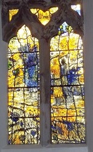

St Margaret’s Church
Tom Denny created a contemporary stained glass “Emmaus Window” for St Margaret’s Church in Millington, East Riding of Yorkshire, installed in 2007. The window depicts the biblical story of the Road to Emmaus, showing the risen Christ revealed to two disciples in the breaking of bread, while also incorporating elements of the local Yorkshire Wolds landscape. It is a notable modern addition to the historic Norman church and was dedicated by the Archbishop of York at the time of its installation.